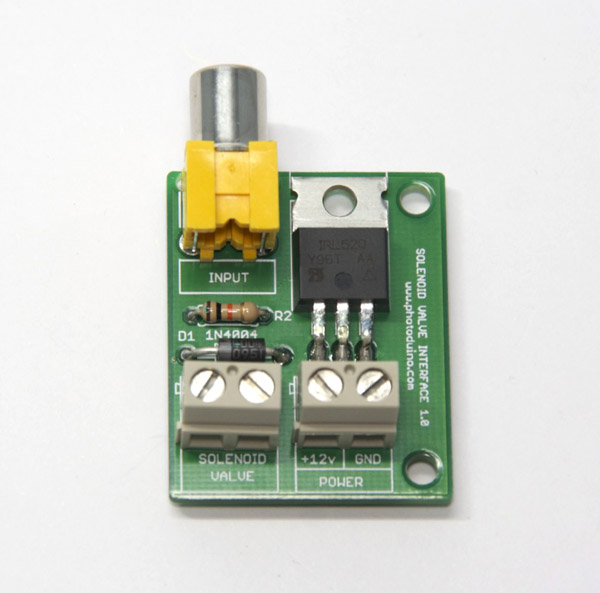
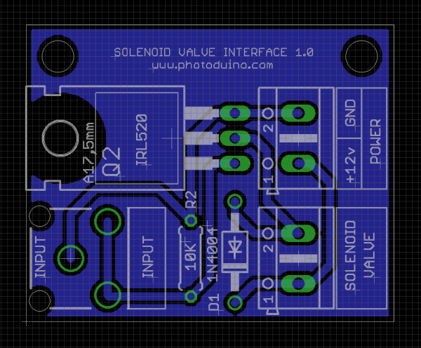
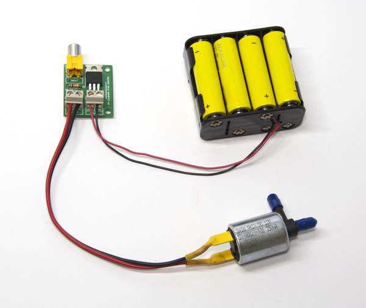
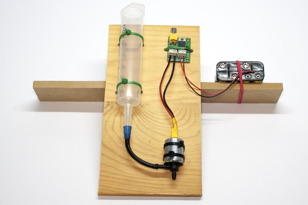
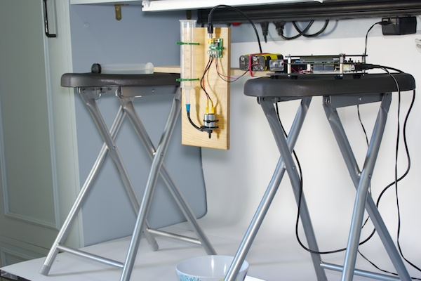

Photoduino’s firmware version 0.10 was released to include the ability to control a solenoid valve and automatically generate drops with Photoduino.
Solenoid valves are typically powered through 12VDC and have a high current consumption, so we need this new circuit to be connected to Photoduino’s DEVICE port so it allows the connection to a solenoid valve and a 12VDC power supply.
The control of the valve is performed by a Mosfet IRL520 logic transistor and the circuit also includes a 1N4004 diode to prevent the reverse current that is accumulated in the coil.
The board is designed in a single sided PCB so it is quite easy to make at home, but it is also available for purchase as a kit which includes a solenoid valve, a 60 ml syringe and a 12VDC battery holder.
The 12V needed to feed the solenoid valve can be supplied by the 8xAA (R6) battery holder included in the kit. You can also use a 12VDC with at least 500 mA current (not included).
Part list
| Qty | Part name | Suggestion |
|---|---|---|
| 1 | PCB Solenoid valve interface 1.0 | eaglecad files order at oshpark.com |
| 1 | 12v Solenoid Valve | jameco |
| 1 | 1N4004 Diode | mouser |
| 1 | 10 Kohms resistor | mouser |
| 2 | 2 pins terminal block | mouser |
| 1 | MOSFET IRL520 | mouser |
| 1 | 8xAA battery socket | mouser |
| 1 | RCA pcb female jack | sparkfun |
| 1 | RCA male-to-male cable | farnell |
| 1 | 50 ml syringe luer catheter without needle | totclinic |
| 1 | Doble wire 2×0,50mm | |
| 1 | Microtube 4mm x 0,25cm |
Check the Building Instructions
PCB Schematics
- Download the Eaglecad files of the circuit


Some pictures of the circuit.




